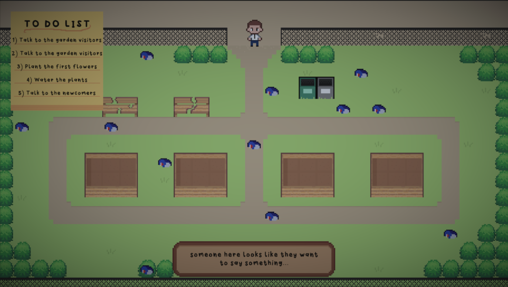

Grow!
...an atmospheric game about restoring an old abandoned community garden.
When things look broken, abandoned and dirty, you have the power in your hands to make a difference! Restore
your local community garden and bring joy back to your neighborhood!
This game was created in 48 hours for the Wholesome Games Jam 2022 following the theme Community.
Team Free Birds is comprised of:
Diego Pontes
Miky
bubbles949
José Andrade
and LV!
PLAY ON ITCH.IO